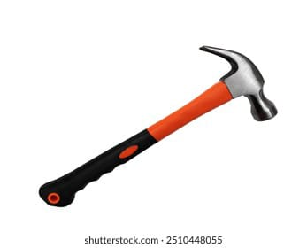
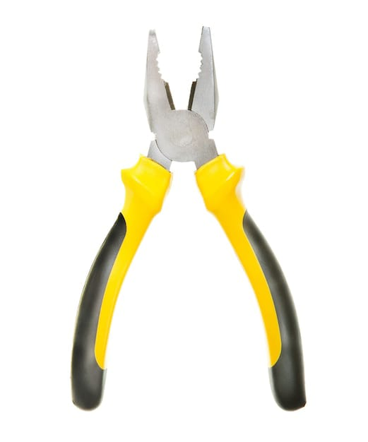
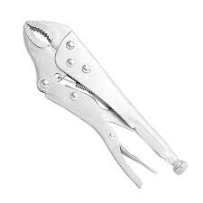
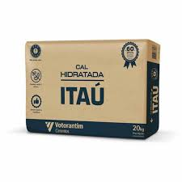
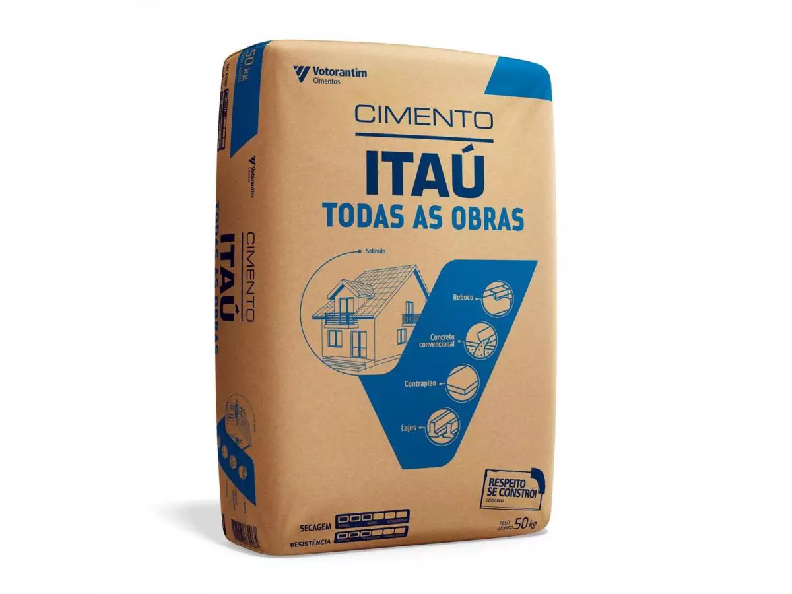
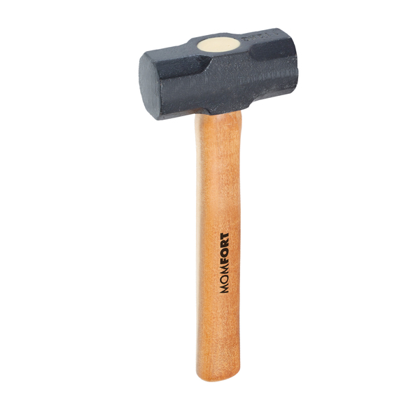
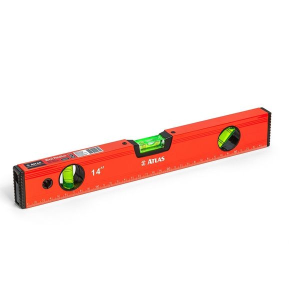
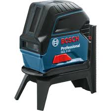

Vem chegando meu mano, que aqui você conquista seus itens de macho com um combo incrivel. Com a compra de mais de 2 produtos você ganha uma makita. Venha ser um ALPHA!
Compre a partir de R$18,90* Parcele também por 18x de R$10,90TODDY >>> NESCAU
PRODUTOS ALPHA

MARTELO DE MACHO
Este martelo é perfeito para você que busca conforto e saliência ao ouvir o barulho da ferramenta de macho em uso. Além de ser o "irmão" do alicate de bico
R$19,99

ALICATE DE BICO DE MACHO
O alicate de bico é uma ferramenta versátil com pontas finas, ideal para trabalhos de precisão, como dobrar, cortar ou segurar pequenos objetos. Ele é comumente usado em eletrônica e artesanato.
R$29,99

ALICATE DE PRESSÃO DE MACHO
O alicate de pressão é uma ferramenta robusta que permite prender e segurar objetos com firmeza. Possui um mecanismo de ajuste que se adapta a diferentes tamanhos e é ideal para trabalhos de montagem, reparo e aperto.
R$79,90

CAL DE MACHO
O saco de cal é um produto utilizado em construção civil e jardinagem. A cal é frequentemente utilizada para a preparação de argamassas, revestimentos e até na correção do solo. O saco geralmente contém 20 kg de cal.
R$14,99

CIMENTO DE MACHO
O cimento é um material de construção essencial, utilizado como aglomerante em concretos e argamassas. Ele proporciona resistência e durabilidade a estruturas, sendo fundamental em obras. Um saco padrão pesa 50 kg.
R$39,99

MARRETA DE MACHO
A marreta é uma ferramenta pesada, geralmente feita de metal ou madeira, utilizada para quebrar materiais como concreto, tijolos ou pedras. Seu cabo longo proporciona força e controle, tornando-a ideal para trabalhos pesados em construção e demolição.
R$59,90

NIVEL DE MÃO DE MACHO
O nível de mão é uma ferramenta compacta usada para verificar a horizontalidade ou verticalidade de superfícies. Com bolhas de ar em tubos, ele garante precisão em pequenos projetos e reparos.
R$25,99

NIVEL A LASER DE MACHO
O nível a laser é uma ferramenta moderna que projeta uma linha de laser, permitindo verificar alinhamentos e níveis com precisão em grandes distâncias. Ideal para obras, reformas e instalações, ele facilita o trabalho em ambientes internos e externos.
R$149,99
MARTELO DE MACHO
Este martelo é perfeito para você que busca conforto e saliência ao ouvir o barulho da ferramenta de macho em uso. Além de ser o "irmão" do alicate de bico
R$19,99
ALICATE DE BICO DE MACHO
O alicate de bico é uma ferramenta versátil com pontas finas, ideal para trabalhos de precisão, como dobrar, cortar ou segurar pequenos objetos. Ele é comumente usado em eletrônica e artesanato.
R$29,99
ALICATE DE PRESSÃO DE MACHO
O alicate de pressão é uma ferramenta robusta que permite prender e segurar objetos com firmeza. Possui um mecanismo de ajuste que se adapta a diferentes tamanhos e é ideal para trabalhos de montagem, reparo e aperto.
R$79,90
CAL DE MACHO
O saco de cal é um produto utilizado em construção civil e jardinagem. A cal é frequentemente utilizada para a preparação de argamassas, revestimentos e até na correção do solo. O saco geralmente contém 20 kg de cal.
R$14,99
CIMENTO DE MACHO
O cimento é um material de construção essencial, utilizado como aglomerante em concretos e argamassas. Ele proporciona resistência e durabilidade a estruturas, sendo fundamental em obras. Um saco padrão pesa 50 kg.
R$39,99
MARRETA DE MACHO
A marreta é uma ferramenta pesada, geralmente feita de metal ou madeira, utilizada para quebrar materiais como concreto, tijolos ou pedras. Seu cabo longo proporciona força e controle, tornando-a ideal para trabalhos pesados em construção e demolição.
R$59,90
NIVEL DE MÃO DE MACHO
O nível de mão é uma ferramenta compacta usada para verificar a horizontalidade ou verticalidade de superfícies. Com bolhas de ar em tubos, ele garante precisão em pequenos projetos e reparos.
R$25,99
NIVEL A LASER DE MACHO
O nível a laser é uma ferramenta moderna que projeta uma linha de laser, permitindo verificar alinhamentos e níveis com precisão em grandes distâncias. Ideal para obras, reformas e instalações, ele facilita o trabalho em ambientes internos e externos.
R$149,99
Desperte o Macho Alpha: Invista na Autenticidade!
Você precisa entender que comprar coisas de produção é a escolha de quem realmente tem atitude. É a forma de se destacar, mostrando que você investe no que é autêntico e de qualidade. Ao escolher produtos feitos com cuidado, você não só apoia a economia local, mas também mostra que sabe o que quer na vida. O ultimate estilo de vida macho alpha é aquele que valoriza o esforço e a paixão por trás de cada item. Então, se você quer ser o verdadeiro líder, mergulhe nessa!
Desperte seu Macho Alpha! E paga essa bostaDisponível pra qualquer lixo de dispositivo que você quiser. Nokia Tijolão é exceção pois é foda 💪
-

TV
-

NOTEBOOK
-

CELULAR
-

TABLET